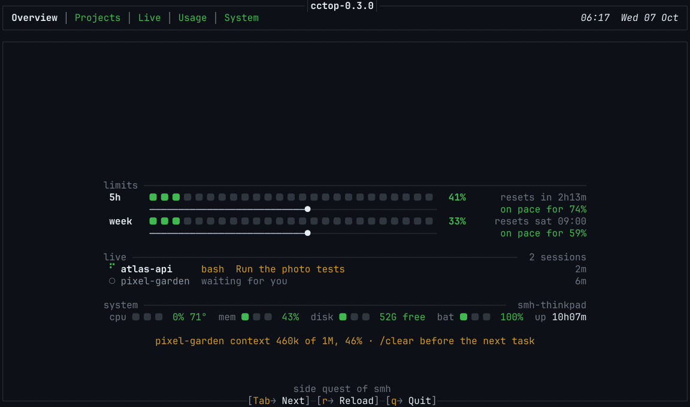
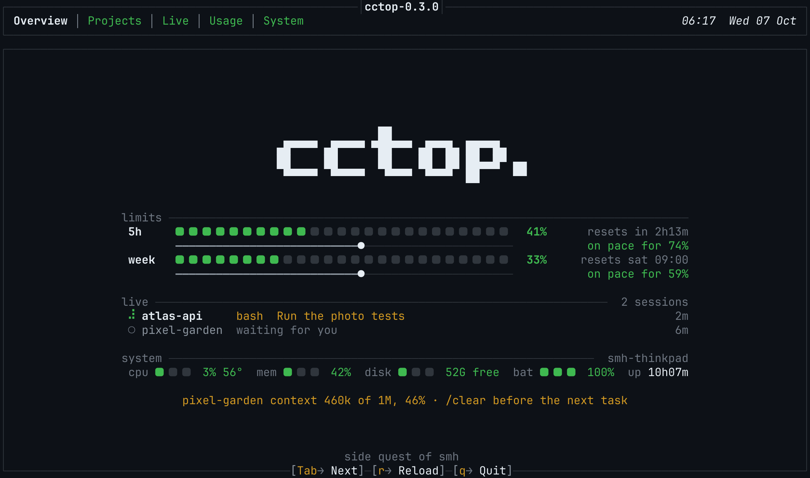
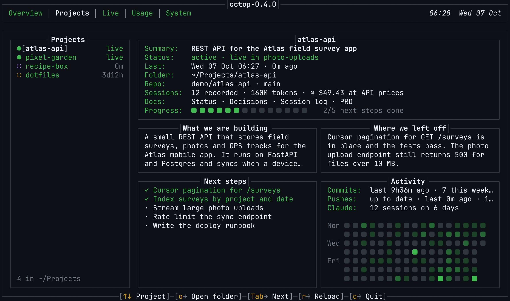
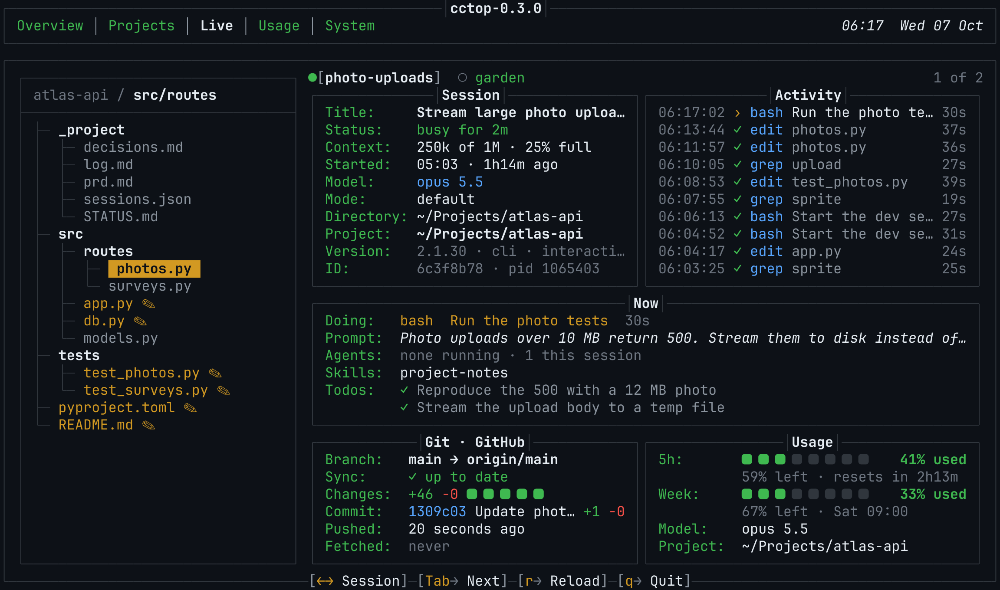
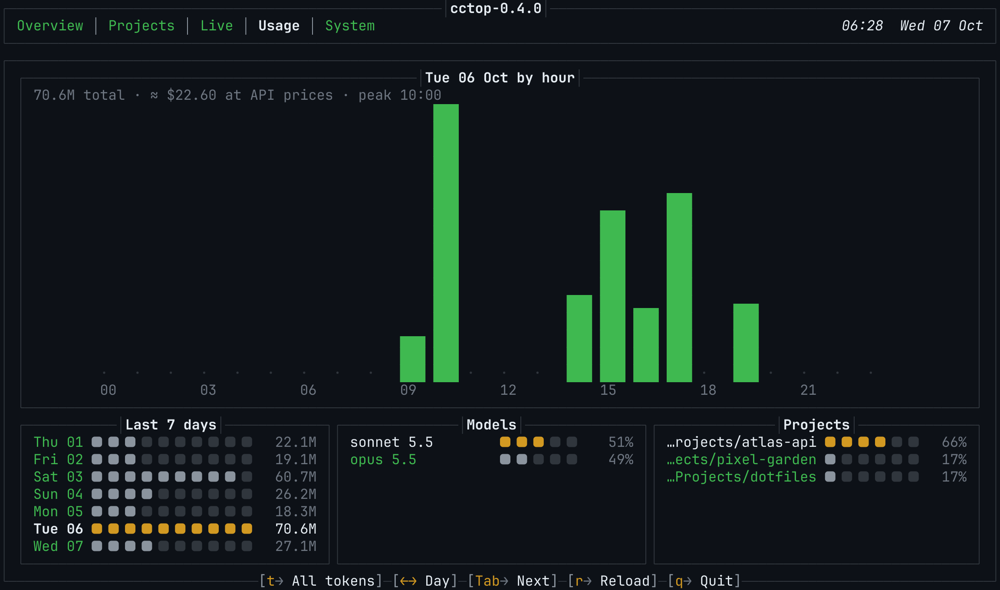
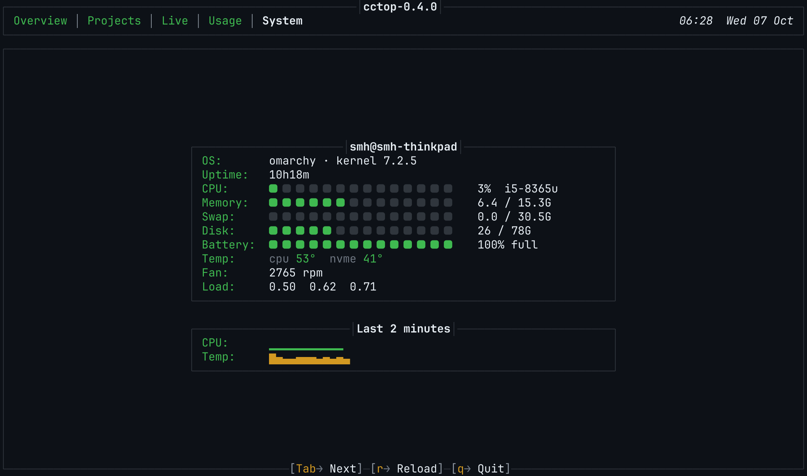

Version 0.4.0 Linux MIT licence
cctop
A terminal dashboard for Claude Code. See how much of your plan is left, what every session is doing, and where you left off in each project, next to the health of your machine.
Releases Changelog Documentation

The Overview at launch. Screens on this page use made-up demo data.
Five tabs, one key each
Overview
Your 5-hour and weekly plan limits, the time until each resets and where your current pace ends up. Below them, every live session with what it is doing now, a one-line system summary, and a reminder when a session's context gets long.

Projects
Every folder in ~/Projects with what you are building, where you left off, the next steps, the project's documents and a commit calendar. A Claude Code hook keeps the notes up to date for you.

Live
Everything about one running session: the file tree with the files Claude has read or changed, the model and context size, a feed of tool calls, the current prompt, agents, skills and todos, and the state of the repository.

Usage
Tokens by hour for any of the last seven days, a seven-day summary, and the split by model and by project, with an estimate of what the same usage would cost at Claude API prices.

System
CPU, memory, swap, disk, battery, temperatures, fan and load, with short history graphs.

Built for the way you work
Pick up where you left off
A hook records every session into the project it worked on, and an optional skill teaches Claude to keep each project's status current. Open the Projects tab and the last state of every project is there.
Know when to clear the context
cctop measures each session's context against the model's window and reminds you to /clear at 40% and to clear or compact at 70%.
Quiet by design
A calm GitHub dark theme, motion that stays short and can be turned off with CCTOP_MOTION=off, and every function on a single key.
Nothing to install but Python
One file, the standard library only. Link it into your PATH and run it in any terminal from 80 by 24 upwards.
Install
Latest version
git clone https://github.com/syedmehedihussain/cctop.git
cd cctop
./install.sh
cctopinstall.sh links cctop into ~/.local/bin and changes nothing else. Add --skill to also install the project-notes skill for Claude Code.
A specific version
git clone --branch v0.4.0 --depth 1 https://github.com/syedmehedihussain/cctop.git
cd cctop
./install.shEvery release is tagged and listed on the Releases page. Changes are in the changelog.
Only the program file
mkdir -p ~/.local/bin
curl -fL -o ~/.local/bin/cctop \
https://raw.githubusercontent.com/syedmehedihussain/cctop/v0.4.0/cctop.py
chmod +x ~/.local/bin/cctopThe single file is the whole dashboard. To update, run the same command with the new version number.
Requirements
- System
- Linux
- Python
- 3.9 or newer
- Claude Code
- Used at least once, so
~/.claudeexists - Terminal
- 80 by 24 or larger, 256 colours
- Font
- A Nerd Font is recommended; any font works with
CCTOP_SQUARE="■ "
Keys
| Key | Action |
|---|---|
| 1 to 5 | Go to a tab |
| Tab, Shift+Tab | Next or previous tab |
| Left, Right | Usage: previous or next day. Live: previous or next session |
| Up, Down | Projects: select a project |
| o | Projects: open the project folder |
| t | Usage: all tokens, input and output, output only, or cost at API prices |
| r | Reload all data |
| q | Quit |
Privacy
Everything is read from your machine
Transcripts, live sessions, git and system data are read locally. cctop writes only to ~/.cache/cctop, and, when you use the hook, to each project's _project/ folder.
One request, to Anthropic only
For plan limits, cctop calls the same endpoint as Claude Code's /usage command, with the login Claude Code already stores. The token is sent only to api.anthropic.com, never logged or saved, and the result is cached for five minutes.
Found a bug or have an idea?
cctop is open source under the MIT licence. Issues and pull requests are welcome.